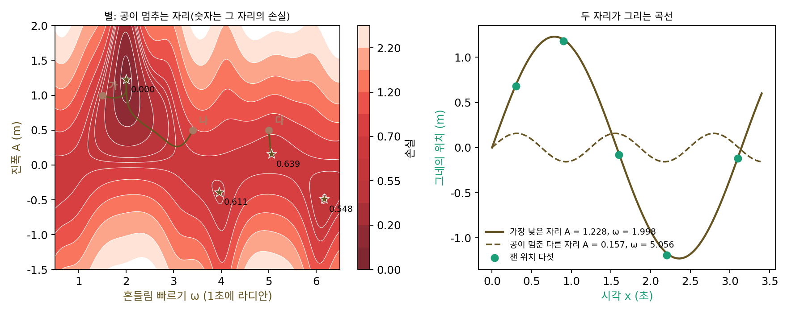

극소: 공이 멈추는 웅덩이
보스코비치 지형에서는 어디에 공을 놓아도 손실이 가장 작은 같은 자리 (723.44, 56737.43)에 닿았는데, 지형이 그릇 하나였기 때문이다. 모든 손실 지형이 그럴까? 직선은 데이터에서 파라미터로 가는 관계가 단순했지만, 신경망처럼 파라미터가 사인, 곱, 꺾임 속에 들어가 있으면 지형에 우묵한 곳이 여러 개 생길 수도 있을 것이다. 그러면 공은 처음 놓인 자리에 따라 서로 다른 곳에서 멈출 것이고, 멈춘 곳이 가장 낮은 곳이라는 보장도 사라진다.
역사: 역전파 논문이 걱정한 것
1986년 데이비드 러멜하트(David Rumelhart), 제프리 힌턴(Geoffrey Hinton), 로널드 윌리엄스(Ronald Williams)는 『네이처』에 「오차를 거꾸로 전파해 표현 배우기」를 실었다. 층이 여럿인 신경망의 가중치를 손실이 줄어드는 쪽으로 고쳐 가는 방법을 보이고, 그 방법으로 신경망이 쓸모 있는 내부 표현을 배운다는 것을 여러 실험으로 보였다. 그들은 논문 끝에 이 방법의 가장 뚜렷한 약점을 직접 적었다. 「오차 곡면에 극소가 있을 수 있어서, 경사하강이 전체의 최소를 찾는다는 보장이 없다.」 그리고 바로 이어서, 여러 태스크를 해 본 경험으로는 신경망이 전체의 최소보다 크게 나쁜 극소에 갇히는 일은 매우 드물었다고 썼다. 그런 일은 태스크를 겨우 해낼 만큼만 연결을 둔 신경망에서만 겪었고, 연결을 몇 개 더하면 가중치 공간에 차원이 늘어나 그 차원들이 장벽을 돌아가는 길을 만들어 준다고 했다.
이 걱정은 그 뒤 오랫동안 신경망 연구를 따라다녔다. 공이 엉뚱한 웅덩이에 갇힌다는 그림은 쉽게 떠오르는데, 실제 신경망의 지형은 너무 커서 정말 그런지 확인하기 어려웠기 때문이다.
그네의 진폭과 각진동수 맞추기
웅덩이가 여럿인 지형을 손으로 따라가려면, 파라미터가 여전히 둘이면서 파라미터가 사인 함수 안에 들어간 모델이 알맞다. 그네가 앞뒤로 흔들리는 위치를 다섯 시각에 쟀다고 하자. 시각 x(초)는 0.3, 0.9, 1.6, 2.2, 3.1이고, 정지한 자리에서 잰 위치 y(m)는 0.68, 1.18, −0.08, −1.19, −0.12다(진폭 1.2, 각진동수 2.0인 진동에 작은 노이즈를 섞어 이 책에서 만든 자료다). 모델은 A·sin(ω·x)이다. 진폭 A는 얼마나 멀리 흔들리는지, ω(오메가)는 각진동수(1초에 몇 라디안씩 도는지)로 얼마나 빨리 흔들리는지를 정한다. 손실은 보스코비치 지형과 같은 평균 제곱 오차 𝓛(A, ω) = (1/5)Σ(A·sin(ωxᵢ) − yᵢ)²다. 그네가 서 있다고 보는 모델(A = 0)의 손실은 0.6583이다.
보스코비치 지형과 같은 규칙으로(파라미터마다 양쪽으로 조금씩 디뎌 손실의 변화율을 재고, 그 변화율의 0.02배만큼 반대로) 공을 세 곳에 놓고 4,000스텝씩 굴려 보자.
| 출발 (A, ω) | 출발 손실 | 멈춘 자리 (A, ω) | 멈춘 자리의 손실 |
|---|---|---|---|
| 가: (1.0, 1.5) | 0.5018 | (1.228, 1.998) | 0.0002 |
| 나: (0.5, 3.4) | 0.8594 | (1.228, 1.998) | 0.0002 |
| 다: (0.5, 5.0) | 0.7348 | (0.157, 5.056) | 0.6391 |
가와 나는 같은 곳에 닿았다. 진폭 1.228, 각진동수 1.998로, 자료를 만든 값 1.2와 2.0에 가깝고 손실은 거의 0이다. 다는 전혀 다른 곳에서 멈췄다. 진폭이 0.157밖에 안 되는 빠른 진동이고, 손실 0.6391은 그네가 서 있다고 보는 모델의 0.6583과 거의 같아서, 다섯 점을 거의 설명하지 못하는 곡선이다. 그런데도 공이 거기서 꼼짝하지 않는 것은, 그 자리에서 네 방향으로 조금씩 움직여 보면 손실이 모두 올라가기 때문이다. 지도를 그려 보면 이 지형에는 우묵한 곳이 넷 있고, 가장 낮은 곳과 나머지 셋 사이는 손실이 높은 언덕으로 막혀 있다.
이렇게 그 둘레의 어느 자리보다 손실이 낮아서 공이 멈추는 자리를 극소 (둘레보다 낮은 웅덩이 / local minimum)라 한다. 극소 가운데 지형 전체에서 가장 낮은 곳을 따로 최소(가장 낮은 곳, global minimum)라 부른다. 그네 지형의 최소는 (1.228, 1.998)이고, 손실 0.5479, 0.6114, 0.6391인 나머지 셋은 극소이지만 최소는 아니다. 보스코비치 지형은 극소가 최소 하나뿐이었다.
공은 발밑만 보므로 극소와 최소를 구별하지 못하고, 극소에 닿으면 어느 쪽으로 디뎌 봐도 오르막이라 멈춘다. 그래서 공이 어디서 멈출지는 공을 처음 어디에 놓았느냐가 정한다.

ML에서: 지름길 연결이 지형을 고르게 한다
리하오와 동료들의 2018년 논문은 신경망 지형의 단면을 그리는 방법만 낸 것이 아니라, 그 방법으로 신경망의 구조에 따라 지형이 어떻게 달라지는지도 보였다. 이미지 분류 신경망 ResNet은 층 몇 개를 건너뛰어 입력을 그대로 더해 주는 지름길 연결(skip connection)을 가진다. 그들은 층이 56개인 ResNet을 지름길이 있는 채로 학습시킨 것과 지름길을 뺀 채로 학습시킨 것의 지형을 나란히 그렸다. 지름길이 있으면 바닥 둘레가 그릇처럼 고른 모양이었고, 지름길이 없으면 우묵한 곳과 솟은 곳이 뒤섞인 험한 땅이었다.
지름길을 뺀 신경망에서는 층이 깊을수록 지형이 험해졌다. 층이 20개일 때는 가운데에 볼록한 등고선이 넓게 자리 잡은 비교적 순한 땅이었는데, 56개에서는 등고선이 어지럽게 얽혔고, 가장 가파르게 내려가는 쪽(등고선에 수직인 쪽)이 가운데의 가장 낮은 곳을 가리키지 않는 넓은 영역이 나타났다. 110개에서는 더 험해졌다. 시험 오차도 층이 20, 56, 110개일 때 8.18%, 13.31%, 16.44%로 나빠졌다. 그들은 지름길 연결이 이렇게 험해지는 것을 막아 주며, 아주 깊은 신경망을 학습시키는 데 지름길이 왜 필요한지를 이것으로 설명할 수 있다고 적었다. 신경망을 어떻게 짜느냐가 공이 굴러갈 땅의 모양을 바꾸는 것이다.
문제 10. 이웃 주유소만 비교하면
곧은 국도를 따라 주유소 아홉 곳이 있고, 휘발유 값(원/L)은 차례로 1689, 1675, 1682, 1698, 1712, 1690, 1661, 1649, 1670 이다(이 책에서 지어낸 값). 운전자는 지금 주유소에서 바로 앞뒤 두 곳의 값만 알아보고, 더 싼 곳이 있으면 그쪽으로 옮기고, 없으면 거기서 넣는다. (가) 첫째 주유소에서 출발하면 어디서 넣는가? (나) 다섯째에서 출발하면? (다) 가장 싼 곳에 닿는 출발점은 어디어디인가?

(가)는 첫째 1689에서 둘째 1675가 더 싸니까 옮기고, 둘째의 이웃은 1689와 1682라 둘 다 비싸니까 둘째에서 넣어요. 1675원이요. 꽤 싸게 넣었네요.

국도 전체에서 가장 싼 곳은 어디였죠?

여덟째 1649원이요. 26원이나 비싸게 넣었네요. 둘째가 앞뒤보다 싸서 멈춘 거고요.

(나)는 다섯째 1712에서 1690, 1661, 1649로 옮겨 가서 여덟째에서 넣어. 아홉째에서 출발해도 여덟째로 가고. 넷째(1698)는 왼쪽 1682가 더 싸서 셋째로 갔다가 둘째로 가니까 1675에서 멈춰. 그러니까 (다)는 다섯째부터 아홉째까지야.

첫째에서 출발한 사람이 여덟째에 닿으려면 무엇을 해야 했을까요?

넷째와 다섯째의 비싼 고개를 넘어야 해요. 이웃만 비교하는 규칙으로는 값이 오르는 쪽으로 한 번도 가지 않으니까 절대 못 넘어요. 둘째는 극소이고 여덟째는 최소예요. 어디서 출발하느냐가 어느 웅덩이에서 멈출지를 정하는 거고요. 실수 위의 함수에서 극값을 찾을 때 구간을 나눠서 각 구간의 극값을 따로 봐야 했던 것과 같아요.

학교 앞 분식집 세 곳만 비교하고 「여기가 제일 싸다」고 믿었는데, 한 정거장 더 가면 훨씬 싼 데가 있던 거랑 똑같네요.
문제 11. 출발점 330곳
그네 지형에서 진폭 A 를 −1.5 부터 2 까지 고른 간격으로 15 개, 각진동수 ω 를 1 부터 6.5 까지 고른 간격으로 22 개 골라 짝지은 330 곳에 공을 하나씩 놓고 4,000 스텝씩 굴렸다. (가) 최소 (1.228, 1.998) 에 닿은 공은 몇 곳에서 출발했을지 먼저 짐작한 뒤 결과와 비교하라. (나) 나머지 공은 어디로 갔는가? (다) 진폭을 1.2 로 묶어 두고 각진동수 ω 만 굴리면, ω 3.6 에서 출발한 공은 어디서 멈추는가? 진폭도 함께 움직일 때와 견주어라.
최소의 웅덩이가 제일 깊으니까 공이 대부분 거기로 모일 것 같아요. 70~80%쯤?
결과를 볼까요.

117곳, 35.5%뿐이에요. 극소 (−0.388, 3.953)으로 83곳(25.2%), (0.157, 5.056)으로 63곳(19.1%), (−0.486, 6.168)으로 49곳(14.8%)이 갔어요. 나머지 18곳은 ω가 0.17쯤인 지도 밖으로 굴러 나갔고요. 세 곳 중 두 곳은 최소에 못 닿았어요.
웅덩이가 깊은 것과 공이 많이 모이는 것은 다른 얘기야. 공은 깊이를 모르고 발밑만 보니까, 출발점이 어느 웅덩이의 비탈에 놓였느냐만 중요해. 최소의 웅덩이는 깊지만 지도에서 차지하는 넓이는 3분의 1 남짓인 거지.

(다)는 어땠어요? 진폭을 묶으면 공이 움직일 수 있는 방향이 하나 줄어요.

ω 3.6에서 출발하면 4.127에서 멈추고 손실이 1.2932예요. 진폭도 같이 움직일 때 그 근처 극소의 손실 0.6114보다 훨씬 나빠요. 이상하네요. 같은 지형을 한 줄로 잘라 봤을 뿐인데요.
진폭을 1.2로 묶은 한 줄 위에서 4.127은 둘레보다 낮은 자리겠죠. 그런데 그 자리에서 진폭 쪽으로 디뎌 보면요?

진폭을 줄이는 쪽이 내리막이에요. 그 줄 위에서는 웅덩이였는데, 차원을 하나 더 열면 빠져나갈 길이 있었던 거예요. 한 변수로 묶어 보면 극소인 점이 두 변수로 보면 극소가 아닐 수 있다는 건, 편미분이 둘 다 0이어야 하는 이유를 처음 배울 때 봤던 거고요.

시간표를 짤 때 요일만 바꿔 보면 더 나은 게 없는데, 교시까지 같이 바꾸면 훨씬 좋은 시간표가 나오는 것과 같네요.
문제 12. 차원 하나가 열어 주는 길
지형 f(u, v) = (u² + v² − 1)² + 0.3u 를 보자. (가) v = 0 으로 묶은 한 줄 f(u, 0) 의 극소와 그 사이의 고개는? (나) u ≈ 0.96 의 극소에서 v 쪽으로 디뎌 보면 어떻게 되는가? (다) (1.5, 0) 과 (1.5, 0.01) 에 공을 놓으면 각각 어디서 멈추는가? (라) 러멜하트와 동료들이 「연결을 몇 개 더하면 장벽을 돌아가는 길이 생긴다」고 쓴 것과 견주어라. (풀어 본 뒤 위젯 3 의 고리 지형과 「문제 12」 단추로 확인해 보자.)
(가)는 계산해 보니 극소가 u = −1.0356(높이 −0.3054)과 u = 0.9602(높이 0.2941) 두 곳이고, 그 사이 u = 0.0754에 높이 1.0113인 고개가 있어요. (1.5, 0)에서 출발한 공은 0.9601에서 멈춰요. 오른쪽 웅덩이에 갇힌 거죠. 고개가 1이나 되니까 넘어갈 수 없어요.
(1.5, 0.01)은요? v를 0.01만 바꿨어요.
어… (−1.0356, 0)까지 가요. 922스텝째에 u = 0을 지나서 왼쪽 웅덩이로 넘어갔어요. 그런데 고개를 넘었다면 높이가 1을 넘어야 하는데, 고리에 내려앉은 뒤로는 길 위 가장 높은 곳이 0.2941이에요. 출발점보다 높이 올라간 적이 없어요.

높이가 1을 안 넘었으면 고개를 넘은 게 아니라 돌아간 거네. (u² + v² − 1)²은… 반지름 1인 고리 위에서 0이야.
그럼 2차원에서 보면 바닥이 고리 모양 도랑이야?
응, 0.3u가 그 도랑을 왼쪽으로 기울이고. 공은 도랑을 따라 반 바퀴 돌아서 왼쪽 끝으로 간 거야.
그럼 (나)로 돌아가서, u = 0.96, v = 0 자리는 2차원에서도 극소일까요?
v 쪽 휨을 계산하면 4(u² − 1) = −0.3124로 음수예요. v 쪽으로는 위로 볼록한 내리막이에요.
그럼 한 줄에서 웅덩이였던 데가 2차원에서는 웅덩이가 아니네?
응, 한쪽으로만 오르막이고 다른 쪽으로는 내리막인 말안장 같은 자리야.
그럼 (1.5, 0)에서 출발한 공은 왜 그 내리막을 못 탔을까요?
v가 정확히 0이라 v 방향 변화율이 0이어서요. 그 줄을 영영 못 벗어났고, 0.01만 비켜 놓아도 그 내리막을 타고 내려가요.
러멜하트와 동료들이 논문에 쓴 문장과 나란히 놓으면요?
「연결을 더하면 가중치 공간에 차원이 늘어나고, 그 차원이 낮은 차원에서 생긴 장벽을 돌아가는 길을 준다」가 이 고리 지형 그대로예요. 문제 11에서 진폭을 묶었을 때 갇혔던 것과도 같고요.

그럼 파라미터가 1억 개면 돌아갈 길도 엄청 많겠네?
차원이 아주 많으면 모든 방향이 동시에 오르막인 자리가 드물 수도 있겠어. 실수 직선에서는 막힌 구간도 평면에서는 돌아갈 수 있다는 걸 위상수학 시간에 연결성으로 배웠던 게 떠올라.
일차원 복도에서는 앞사람이 막으면 못 지나가지만 넓은 광장에서는 옆으로 돌아가면 되는 거네요. 파라미터가 많은 게 꼭 짐만은 아니라는 거고요.